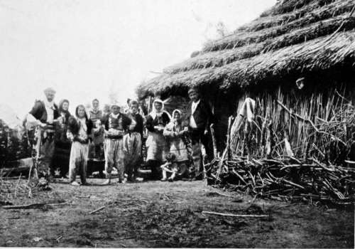

The Search After The Great White Heron. Part 7
Description
This section is from the book "Bird-Hunting Through Wild Europe", by R. B. Lodge. Also available from Amazon: Bird-Hunting Through Wild Europe.
The Search After The Great White Heron. Part 7
There was no killing that day, and we pursued our journey in peace, arriving at the same village from which we had been turned away, in our search for Pelicans, by the three armed men.
My very first day's work was brought to an abrupt close by a repetition of the same thing.
Again three men with rifles swooped down on us, one of them also provided with a length of rope, with which they actually commenced tying up one of my men. But nothing came of it except that again we were escorted back to our boat in a sort of informal arrest. The men, it seemed, were gens darmes, though wearing no uniform. In fact, for all intents and purposes, they are murderers and banditti. Among them was the same ruffian who had pointed his rifle at me on my previous visit. I saw a good deal of this man later, and at the little han outside the guard-house across the frontier he would sit cross-legged on the table and make cigarettes for me, and in his company I have drank many cups of coffee. He boasted of having shot eighteen men, and I haven't the slightest doubt he would shoot anybody he was paid to kill without any scruples-and his price would not be so very expensive either. A couple of medjidiehs, perhaps, at four shillings each!
He was told off to accompany me afterwards to see I did no mischief, for I telegraphed to the British Consul at Scutari to ask the Governor-General to send orders to the people here not to molest me. Rather to my surprise he did so. It is true that he had promised to assist me to the utmost of his power when I had called on him with my credentials, and he had besides received instructions from Constantinople to do so. But promises in Turkey are not always meant to be kept.
The way this man performed his duty was funny. All I had to do was to provide my boatmen with a sufficiency of rum. I was then quite free to do what I liked-I could have surveyed the whole place, or done anything else, while he was imbibing rum out of the bottle. When at the end of the day we left him at the landing-place opposite his guardhouse, he was always exceedingly drunk, waving in farewell a big blue cotton umbrella in one hand, and his loaded rifle in the other. I was always very glad to see the last of him, for he used in his drunken way to point his rifle at any of us, and in the state he was in an accidental touch of the trigger was not by any means an unlikely thing to happen.
Before he used to come with me his officer accompanied our party one day. A very smart, good-looking man he was too, and spoke a little French.
But he was no more efficient in watching me than his subordinate. We had gone some distance up the river to enlist the services of a family of Albanian mountaineers in exploring some submerged forests which looked promising, but on arrival at their house so much time was taken up in the duties of hospitality that I thought I should never get away to do any work. We were ushered inside, of course, where we all squatted round the fire while the usual coffee was made, then cigarettes, raki, and cream cheese were handed round. We were a large party, and the family was a large one : two brothers, apparently, with their wives and innumerable children, and an old woman, possibly the mother, all living together in a big basket, for the house was entirely made of wicker-work ; inside and out, partitions, cupboards, sleeping-bunks, and every part was made of osiers, or willow twigs, roughly matted together, so there was plenty of ventilation, and a free outlet for the smoke.
As soon as I could I escaped outside, and, accompanied by two boys and one of the men, armed with a first-rate magazine carbine, went in search of the Velika biyella charplya (Great White Heron). The bird had been described to them, and the local name used, and they professed their ability to take me to a nest. Off we went, nearly waist-deep in water for about an hour, when they conducted me with great pride to the nest of a Hooded Crow !
The four skinny, ungainly-looking little Crows which were the inhabitants of this nest seemed to wear a grin of derision on their ugly faces as I looked at them, and I felt inclined to wring their necks. But it was no use being angry ; the people had done their best according to their limited ability, so I had to make the best of it. We waded altogether for three or four hours and found nothing more. The Turkish police officer meanwhile had been reclining at his ease drinking raki, and when I returned, sopping wet and very tired and hungry, he was more than 'half seas over.' With his boots off and his uniform unbuttoned he looked a very disreputable and dissipated Turk. By this time they had prepared a dinner for us all, to which we did full justice, though I have to this moment a vivid recollection of the nastiness of the chief dish, a sort of maize porridge, very thick and stodgy.
The people and the house generally had such a wild look about them that I set up the camera for a family group, after which I invited them to look through the camera at one another. It was a funny sight to see about seven or eight women, children and boys, all trying to get their heads under the focusing-cloth together, while a dirty-looking brat would be doing his best to look in at the lens at the same time. It was a hard task to keep them in order, and give them each a chance of seeing something. No doubt this was the first time any of them had ever seen such a thing, and they evidently took me for something like a magician.
I had announced a reward of a napoleon for any news of a veritable nest of White Herons, and several times made expeditions to more or less distant localities on false information. Once they took me to an Albanian village, only to find a Stork's nest, and were very aggrieved because I refused to pay. After all, there was a Stork's nest in the village, within 100 yards of where I was living, but I suppose the more distant one to them seemed better value for the money, and a better excuse to make me pay up.
Albanian Family
Continue to:
- prev: The Search After The Great White Heron. Part 6
- Table of Contents
- next: The Search After The Great White Heron. Part 8